De novo design of protein structure and function with RFdiffusion
Abstract
AbstractThere has been considerable recent progress in designing new proteins using deep-learning methods1–9. Despite this progress, a general deep-learning framework for protein design that enables solution of a wide range of design challenges, including de novo binder design and design of higher-order symmetric architectures, has yet to be described. Diffusion models10,11 have had considerable success in image and language generative modelling but limited success when applied to protein modelling, probably due to the complexity of protein backbone geometry and sequence–structure relationships. Here we show that by fine-tuning the RoseTTAFold structure prediction network on protein structure denoising tasks, we obtain a generative model of protein backbones that achieves outstanding performance on unconditional and topology-constrained protein monomer design, protein binder design, symmetric oligomer design, enzyme active site scaffolding and symmetric motif scaffolding for therapeutic and metal-binding protein design. We demonstrate the power and generality of the method, called RoseTTAFold diffusion (RFdiffusion), by experimentally characterizing the structures and functions of hundreds of designed symmetric assemblies, metal-binding proteins and protein binders. The accuracy of RFdiffusion is confirmed by the cryogenic electron microscopy structure of a designed binder in complex with influenza haemagglutinin that is nearly identical to the design model. In a manner analogous to networks that produce images from user-specified inputs, RFdiffusion enables the design of diverse functional proteins from simple molecular specifications.Subject terms: Protein design, Proteins, Machine learning
Main
De novo protein design seeks to generate proteins with specified structural and/or functional properties, for example, making a binding interaction with a given target12, folding into a particular topology13 or containing a catalytic site4. Denoising diffusion probabilistic models (DDPMs), a powerful class of machine learning models recently demonstrated to generate new photorealistic images in response to text prompts14,15, have several properties well suited to protein design. First, DDPMs generate highly diverse outputs, as they are trained to denoise data (for instance, images or text) that have been corrupted with Gaussian noise. By learning to stochastically reverse this corruption, diverse outputs closely resembling the training data are generated. Second, DDPMs can be guided at each step of the iterative generation process towards specific design objectives through provision of conditioning information. Third, for almost all protein design applications it is necessary to explicitly model three-dimensional (3D) structures; rotationally equivariant DDPMs can do this in a global representation frame independent manner. Recent work has adapted DDPMs for protein monomer design by conditioning on small protein ‘motifs’5,9 or on secondary structure and block-adjacency (‘fold’) information8. Although promising, these attempts have shown limited success in generating sequences that fold to the intended structures in silico5,16, probably due to the limited ability of the denoising networks to generate realistic protein backbones, and have not been tested experimentally.
We reasoned that improved diffusion models for protein design could be developed by taking advantage of the deep understanding of protein structure implicit in powerful structure prediction methods such as AlphaFold2 17 (AF2) and RoseTTAFold18 (RF). RF has properties well suited for use in a protein design DDPM (Fig. 1a): it generates protein structures with high precision, operates on a rigid-frame representation of residues with rotational equivariance and has an architecture enabling conditioning on design specifications at the individual residue, inter-residue distance and orientation, and 3D coordinate levels. In previous work, we fine-tuned RF to complete protein backbones around input functional motifs in a single step (RFjoint Inpainting4). Experimental characterization showed that the method can scaffold a wide range of protein functional motifs with atomic accuracy19, but the approach fails on minimalist site descriptions that do not sufficiently constrain the overall fold and, because it is deterministic, can produce only a limited diversity of designs for a given problem. We reasoned that by fine-tuning RF as the denoising network in a generative diffusion model instead, we could overcome both problems: because the starting point is random noise, each denoising trajectory yields a different solution, and because structure is built up progressively through many denoising iterations, little to no starting structural information should be required. In this study, we used an updated version of RF18 as the basis for the denoising network architecture (Supplementary Methods), but other equivariant structure prediction networks (AF2 17, OmegaFold20, ESMFold21) could in principle be substituted into an analogous DDPM.
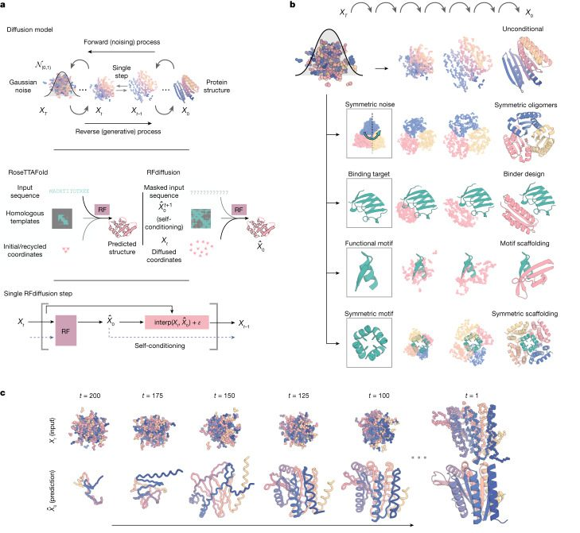
We construct a RF-based diffusion model, RFdiffusion, using the RF frame representation that comprises a Cα coordinate and N-Cα-C rigid orientation for each residue. We generate training inputs by noising structures sampled from the Protein Data Bank (PDB) for up to 200 steps22. For translations, we perturb Cα coordinates with 3D Gaussian noise. For residue orientations, we use Brownian motion on the manifold of rotation matrices (building on refs. 23,24). To enable RFdiffusion to learn to reverse each step of the noising process, we train the model by minimizing a mean-squared error (m.s.e.) loss between frame predictions and the true protein structure (without alignment), averaged across all residues (Supplementary Methods). This loss drives denoising trajectories to match the data distribution at each timestep and hence to converge on structures of designable protein backbones (Extended Data Fig. 2a). The m.s.e. contrasts to the loss used in RF structure prediction training (frame aligned point error or FAPE) in that, unlike FAPE, m.s.e. loss is not invariant to the global reference frame and therefore promotes continuity of the global coordinate frame between timesteps (Supplementary Methods).
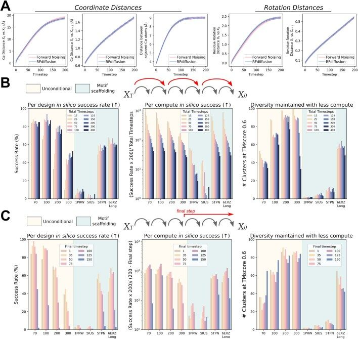
To generate a new protein backbone, we first initialize random residue frames and RFdiffusion makes a denoised prediction. Each residue frame is updated by taking a step in the direction of this prediction with some noise added to generate the input to the next step. The nature of the noise added and the size of this reverse step is chosen such that the denoising process matches the distribution of the noising process (Supplementary Methods and Extended Data Fig. 2a). RFdiffusion initially seeks to match the full breadth of possible protein structures compatible with the purely random frames with which it is initialized, and hence the denoised structures do not initially seem protein-like (Fig. 1c, left). However, through many such steps, the breadth of possible protein structures from which the input could have arisen narrows and RFdiffusion predictions come to closely resemble protein structures (Fig. 1c, right). We use the ProteinMPNN network1 to subsequently design sequences encoding these structures, typically sampling eight sequences per design in line with previous work5,16 (but see Supplementary Fig. 2a). We also considered simultaneously designing structure and sequence within RFdiffusion, but given the excellent performance of combining ProteinMPNN with the diffusion of structure alone, we did not extensively explore this possibility.
Figure 1a highlights the similarities between RF structure prediction and an RFdiffusion denoising step: in both cases, the networks transform coordinates into a predicted structure, conditioned on inputs to the model. In RF, sequence is the primary input, with extra structural information provided as templates and initial coordinates to the model. In RFdiffusion, the primary input is the noised coordinates from the previous step. For specific design tasks, a range of auxiliary conditioning information, including partial sequence, fold information or fixed functional-motif coordinates can be provided (Fig. 1b and Supplementary Methods).
We explored two different strategies for training RFdiffusion: (1) in a manner akin to ‘canonical’ diffusion models, with predictions at each timestep independent of predictions at previous timesteps (as in previous work5,8,9,16), and (2) with self-conditioning25, in which the model can condition on previous predictions between timesteps (Fig. 1a, bottom row and Supplementary Methods). The latter strategy was inspired by the success of ‘recycling’ in AF2, which is also central to the more recent RF model used here (Supplementary Methods). Self-conditioning within RFdiffusion notably improved performance on in silico benchmarks encompassing both conditional and unconditional protein design tasks (Fig. 2e and Extended Data Fig. 1e). Increased coherence of predictions within self-conditioned trajectories may, at least in part, explain these performance increases (Extended Data Fig. 1h). Fine-tuning RFdiffusion from pretrained RF weights was far more successful than training for an equivalent length of time from untrained weights (Extended Data Fig. 1f,g, also Supplementary Fig. 1) and the m.s.e. loss was also crucial for unconditional generation (Extended Data Fig. 1d). For all in silico benchmarks in this paper, we use the AF2 structure prediction network17 for validation and define an in silico ‘success’ as an RFdiffusion output for which the AF2 structure predicted from a single sequence is (1) of high confidence (mean predicted aligned error (pAE), less than five), (2) globally within a 2 Å backbone root mean-squared deviation (r.m.s.d.) of the designed structure and (3) within 1 Å backbone r.m.s.d. on any scaffolded functional site (Supplementary Methods). This measure of in silico success has been found to correlate with experimental success4,7,26 and is significantly more stringent than template modelling (TM)-score-based metrics used elsewhere5,16,27–29 (Supplementary Fig. 2c,d).
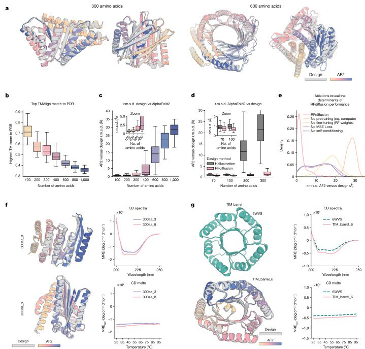
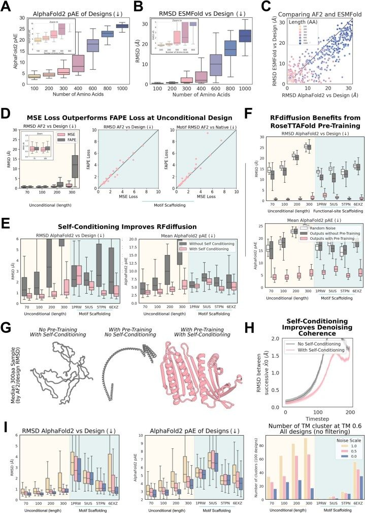
Unconditional protein monomer generation
As shown in Fig. 2a–c and Supplementary Fig. 3c,d, starting from random noise, RFdiffusion can readily generate elaborate protein structures with little overall structural similarity to structures seen during training, indicating considerable generalization beyond the PDB (see Supplementary Table 1 for a comparison of all designs in the paper to the PDB). The designs are diverse (Supplementary Fig. 3a), spanning a wide range of alpha, beta and mixed alpha–beta topologies, with AF2 and ESMFold (Fig. 2c, Extended Data Fig. 1b,c and Supplementary Fig. 2b) predictions very close to the design structure models for de novo designs with as many as 600 residues. RFdiffusion generates plausible structures for even very large proteins, but these are difficult to validate in silico as they are probably generally beyond the single sequence prediction capabilities of AF2 and ESMFold. The quality and diversity of designs that are sampled are inherent to the model, and do not depend on any auxiliary conditioning input (for example, secondary structure information8). We experimentally characterized six of the 300 amino acid designs and three of the 200 amino acid designs, and found that they have circular dichroism spectra consistent with the mixed alpha–beta topologies of the designs and are extremely thermostable (Extended Data Fig. 3). Physics-based protein design methodologies have struggled in unconstrained generation of diverse protein monomers because of the difficulty of sampling on the very large and rugged conformational landscape30, and overcoming this limitation has been a primary test of deep-learning based protein design approaches5,6,8,16,27,31. RFdiffusion strongly outperforms (based on the AF2 success metric described above) Hallucination with RF, an experimentally validated method using Monte Carlo search or gradient descent to identify sequences predicted to fold into stable structures (Fig. 2d). RFdiffusion generation is also more compute efficient than unconstrained Hallucination with RF, and efficiency can be greatly improved by taking larger steps at inference time and by truncating trajectories early, which is possible because RF predicts the final structure at each timestep (Extended Data Fig. 2b,c). For example, a 100-residue protein can be generated in as little as 11 s on an NVIDIA RTX A4000 Graphical Processing Unit, in contrast to RF Hallucination, which takes around 8.5 min.
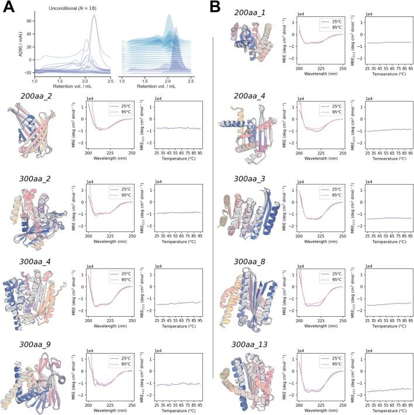
It is often desirable to be able to specify a protein fold during design (such as triose-phosphate isomerase (TIM) barrels or cavity-containing NTF2s for small molecule binder and enzyme design32,33), and thus we further fine-tuned RFdiffusion to condition on secondary structure and/or fold information, enabling rapid and accurate generation of diverse designs with the desired topologies (Fig. 2g and Extended Data Fig. 4). In silico success rates were 42.5 and 54.1% for TIM barrels and NTF2 folds, respectively (Extended Data Fig. 4d), and experimental characterization of 11 TIM barrel designs indicated that at least eight designs were soluble, thermostable and had circular dichroism spectra consistent with the design model (Fig. 2g and Extended Data Fig. 4e,f).
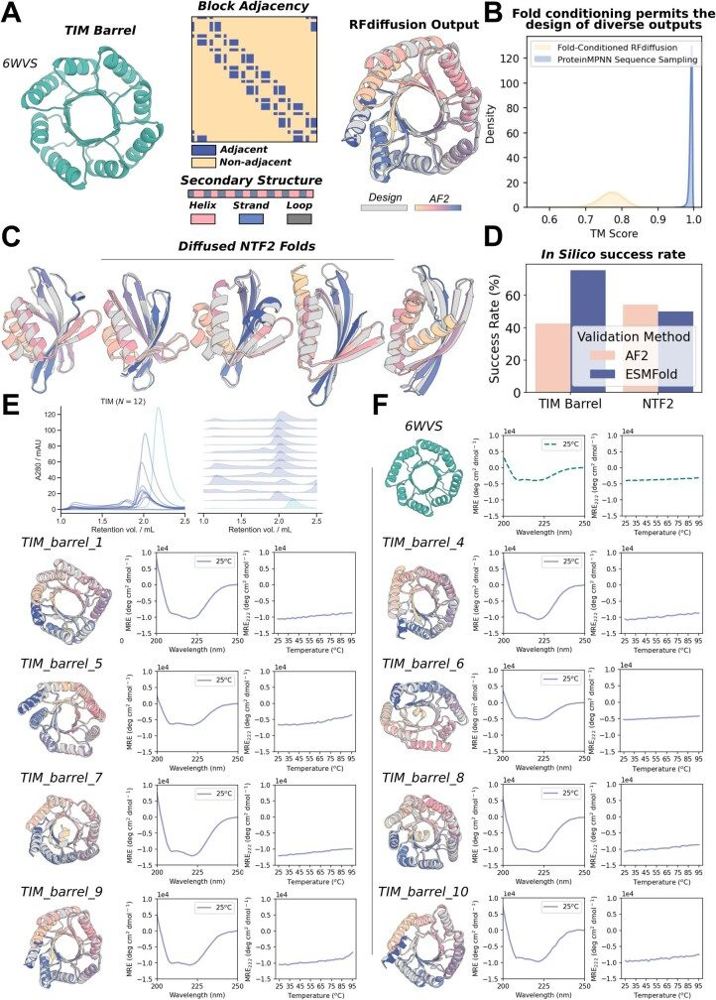
Design of higher-order oligomers
There is considerable interest in designing symmetric oligomers, which can serve as vaccine platforms34, delivery vehicles35 and catalysts36. Cyclic oligomers have been designed using structure prediction networks with an adaptation of Hallucination that searches for sequences predicted to fold to the desired cyclic symmetry, but this approach fails for higher-order dihedral, tetrahedral, octahedral and icosahedral symmetries, probably in part because of the much lower representation of such structures in the PDB7.
We set out to generalize RFdiffusion to create symmetric oligomeric structures with any specified point group symmetry. Given a specification of a point group symmetry for an oligomer with n chains, and the monomer chain length, we generate random starting residue frames for a single monomer subunit as in the unconditional generation case, and then generate n − 1 copies of this starting point arranged with the specified point group symmetry. Because RFdiffusion is equivariant (inherited from RF) with respect to rotation and relabelings of chains, symmetry is largely maintained in the denoising predictions; we explicitly resymmetrize at each step but this changes the structures only slightly (compare grey and coloured chains in Extended Data Fig. 5a and Supplementary Methods). For octahedral and icosahedral architectures, we explicitly model only the smallest subset of monomers required to generate the full assembly (for example, for icosahedra, the subunits at the five-, three- and twofold symmetry axes) to reduce the computational cost and memory footprint.
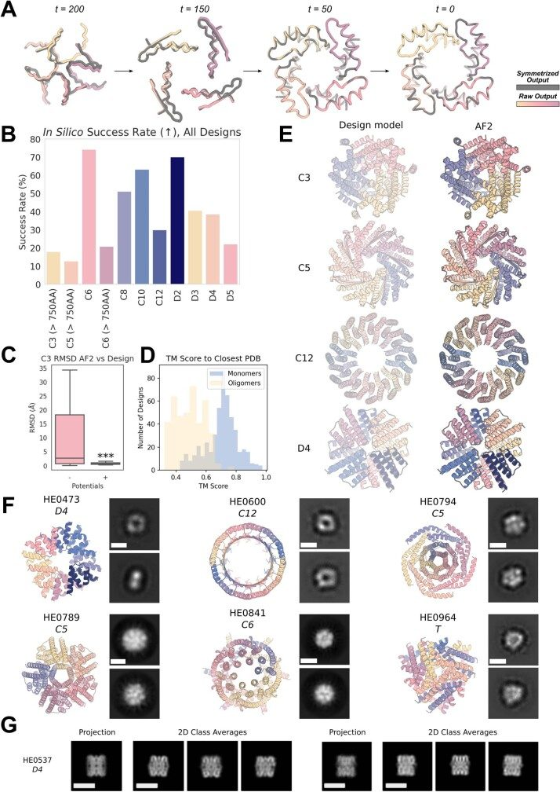
Despite not being trained on symmetric inputs, RFdiffusion is able to generate symmetric oligomers with high in silico success rates (Extended Data Fig. 5b), particularly when guided by an auxiliary inter- and intrachain contact potential (Extended Data Fig. 5c). As illustrated in Fig. 3 and Extended Data Fig. 5e, RFdiffusion designs are nearly indistinguishable from AF2 predictions of the structures adopted by the designed sequences, and many show little resemblance to previously solved protein structures (Extended Data Fig. 5d and Supplementary Table 1). Several of the oligomeric topologies are not seen in the PDB, including two-layer beta barrels (Fig. 3a, C10 symmetry) and complex mixed alpha/beta topologies (Fig. 3a, C8 symmetry; closest TM align in PDB 6BRP, 0.47, and PDB 6BRO, 0.43, respectively).
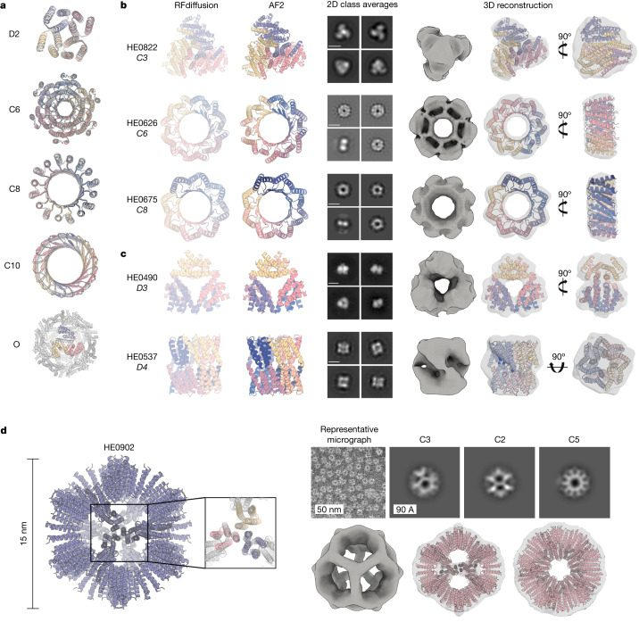
We selected 608 designs for experimental characterization and found using size-exclusion chromatography (SEC) that at least 87 had oligomerization states closely consistent with the design models (within the 95% confidence interval, 126 designs within the 99% confidence interval, as determined by SEC calibration curves; Supplementary Figs. 4 and 5). We took advantage of the increased size of these oligomers (compared to the smaller unconditional and fold-conditioned monomers described above) and collected negative stain electron microscopy (nsEM) data on a subset of these designs across different symmetry groups. For most, distinct particles were evident with shapes resembling the design models in both the raw micrographs and subsequent two-dimensional (2D) classifications (Fig. 3 and Extended Data Fig. 5f). nsEM characterization of a C3 design (HE0822) with 350 residue subunits (1,050 residues in total) suggests that the actual structure is very close to the design, both over the 350 residue subunits and the overall C3 architecture. 2D class averages are clearly consistent with both top and side views of the design model, and a 3D reconstruction of the density has key features consistent with the design, including the distinctive pinwheel shape (Fig. 3b, top row). Electron microscopy 2D class averages of C5 and C6 designs with more than 750 residues (HE0794, HE0789, HE0841) were also consistent with the respective design models (Extended Data Fig. 5f).
RFdiffusion also generated cyclic oligomers with alpha and/or beta barrel structures that resemble expanded TIM barrels and provide an interesting comparison between innovation during natural evolution and innovation through deep learning. The TIM barrel fold, with eight strands and eight helices, is one of the most abundant folds in nature37. nsEM confirmed the structure of two RFdiffusion designed cyclic oligomers, which considerably extend beyond this fold (Fig. 3b, bottom rows). HE0626 is a C6 alpha–beta barrel composed of 18 strands and 18 helices, and HE0675 is a C8 octamer composed of an inner ring of 16 strands and an outer ring of 16 helices arranged locally in a very similar repeating pattern to the TIM barrel (1:1 helix:strand). For both HE0626 and HE0675 we obtained nsEM 3D reconstructions that are in agreement with the computational design models. The HE0600 design is also an alpha–beta barrel (Extended Data Fig. 5f), but has two strands for every helix (24 strands and 12 helices in total) and hence is locally different from a TIM barrel. Whereas natural evolution has extensively explored structural variations of the classic eight-strand or eight-helix TIM barrel fold, RFdiffusion can more readily explore global changes in barrel curvature, enabling discovery of TIM barrel-like structures with many more helices and strands.
RFdiffusion also readily generated structures with dihedral, tetrahedral and icosohedral symmetries (Fig. 3c,d and Extended Data Fig. 5e,f). SEC characterization indicated that 38 D2, seven D3 and three D4 designs had the expected molecular weights (these have four, six and eight chains, respectively) (Supplementary Fig. 5). Although the D2 dihedrals are too small for nsEM, 2D class averages—and for some, 3D reconstructions of D3 and D4 designs—were congruent with the overall topologies of the design models (Fig. 3c and Extended Data Fig. 5f). Similarly, 3D reconstruction (Fig. 3c) and cryogenic electron microscopy (cryo-EM) 2D class averages (Extended Data Fig. 5g and Supplementary Fig. 6) of the D4 HE0537 closely match the design model, recapitulating the roughly 45° offset between tetramic subunits. 2D nsEM class averages for a 12-chain tetrahedron (HE0964) were consistent with the design model (Extended Data Fig. 5f). Forty-eight icosahedra were selected for experimental validation, and one, HE0902, a 15 nm (diameter) highly porous assembly (Fig. 3d, left) was observed in nsEM micrographs to form homogeneous particles. 2D class averages and a 3D reconstruction very closely match the design model (Fig. 3d), with triangular hubs arrayed around the empty C5 axes. Designs such as HE0902 (and future similar large assemblies) should be useful as new nanomaterials and vaccine scaffolds, with robust assembly and (in the case of HE0902) the outward facing N and C termini offering many possibilities for antigen display.
Functional-motif scaffolding
We next investigated the use of RFdiffusion for scaffolding protein structural motifs that carry out binding and catalytic functions, in which the role of the scaffold is to hold the motif in precisely the 3D geometry needed for optimal function. In RFdiffusion, we input motifs as 3D coordinates (including sequence and sidechains) both during conditional training and inference, and build scaffolds that hold the motif atomic coordinates in place. Many deep-learning methods have been developed recently to address this problem, including RFjoint Inpainting4, constrained Hallucination4 and other DDPMs5,8,29. To rigorously evaluate the performance of these methods in comparison to RFdiffusion across a broad set of design challenges, we established an in silico benchmark test (Supplementary Table 9) comprising 25 motif-scaffolding design problems addressed in six recent publications encompassing several design methodologies4,5,29,38–40. The challenges span a broad range of motifs, including simple ‘inpainting’ problems, viral epitopes, receptor traps, small molecule binding sites, binding interfaces and enzyme active sites.
RFdiffusion solves 23 of the 25 benchmark problems, compared to 15 for Hallucination and 19 for RFjoint Inpainting (Fig. 4a,b). For 19 out of 23 of the problems solved by RFdiffusion, the fraction of successful designs is higher than either Hallucination or RFjoint Inpainting. The excellent performance of RFdiffusion required no hyperparameter tuning or external potentials; this contrasts with Hallucination, for which problem-specific optimization can be required. In 17 out of 23 of the problems, RFdiffusion-generated successful solutions with higher in silico success rates when noise was not added during the reverse diffusion trajectories (see Extended Data Fig. 1i for further discussion on the effect of noise on design quality, and Supplementary Fig. 8 for analysis of design diversity). The ability of RFdiffusion to scaffold functional motifs is not related to their presence in the RFdiffusion training set (Supplementary Fig. 7).
One of the benchmark problems is the scaffolding of the p53 helix that binds MDM2. Inhibiting this interaction through high-affinity competitive inhibition by scaffolding the p53 helix and making further interactions with MDM2 is a promising therapeutic avenue41. In silico success has been described elsewhere4, but experimental success has not been reported. We used an RFdiffusion model fine-tuned on protein complexes (Supplementary Methods) to generate 96 designs scaffolding this helix. We scaffolded the p53 helix in the presence of MDM2, so extra interactions could be designed by RFdiffusion and experimentally identified 0.5 and 0.7 nM binders (Fig. 4c,d), three orders of magnitude higher affinity than the reported 600 nM affinity of the p53 peptide alone42. The overall success rate was quite high: out of the 96 designs, 55 showed some detectable binding at 10 μM (Fig. 4e and Supplementary Fig. 10h).
Scaffolding enzyme active sites
A grand challenge in protein design is to scaffold minimal descriptions of enzyme active sites comprising a few single amino acids. Whereas some in silico success has been reported previously4, a general solution that can readily produce high-quality, orthogonally validated outputs remains elusive. Following fine-tuning on a task mimicking this problem (Supplementary Methods), RFdiffusion was able to scaffold enzyme active sites comprising many sidechain and backbone functional groups with high accuracy and in silico success rates across a range of enzyme classes (Fig. 4f and Extended Data Fig. 6a–d; in silico success required fine tuning). Although RFdiffusion is unable to explicitly model bound small molecules at present (however, see our conclusions), the substrate can be implicitly modelled using an external potential to guide the generation of ‘pockets’ around the active site. As a demonstration, we scaffold a retroaldolase active site triad while implicitly modelling the reaction substrate (Extended Data Fig. 6e–h).
Symmetric functional-motif scaffolding
Several important design challenges involve the scaffolding of several copies of a functional motif in symmetric arrangements. For example, many viral glycoproteins are trimeric and symmetry matched arrangements of inhibitory domains can be extremely potent43–46. Conversely, symmetric presentation of viral epitopes in an arrangement that mimics the virus could induce new classes of neutralizing antibodies47,48. To explore this general direction, we sought to design trimeric multivalent binders to the SARS-CoV-2 spike protein. In previous work, flexible linkage of a binder to the ACE2 binding site (on the spike protein receptor binding domain) to a trimerization domain yielded a high-affinity inhibitor that had potent and broadly neutralizing antiviral activity in animal models43. Ideally, however, symmetric fusions to binders would be rigid, so as to reduce the entropic cost of binding while maintaining the avidity benefits from multivalency. We used RFdiffusion to design C3-symmetric trimers that rigidly hold three binding domains (the functional motif in this case) such that they exactly match the ACE2 binding sites on the SARS-CoV-2 spike protein trimer. The designs were confidently predicted by AF2 to both assemble as C3-symmetric oligomers, and to scaffold the AHB2 SARS-CoV-2 binder interface with high accuracy (Fig. 5a).
The ability to scaffold functional sites with any desired symmetry opens up new approaches to designing metal-coordinating protein assemblies49,50. Divalent transition metal ions show distinct preferences for specific coordination geometries (for example, square planar, tetrahedral and octahedral) with ion-specific optimal sidechain–metal bond lengths. RFdiffusion provides a general route to building up symmetric protein assemblies around such sites, with the symmetry of the assembly matching the symmetry of the coordination geometry. As a first test, we sought to design square-planar Ni2+ binding sites. We designed C4 protein assemblies with four central histidine imidazoles arranged in an ideal Ni2+-binding site with square-planar coordination geometry (Fig. 5b). Diverse designs starting from distinct C4-symmetric histidine square-planar sites had good in silico success with the histidine residues in near ideal geometries for coordinating metal in the AF2-predicted structures (Supplementary Fig. 9).
We expressed and purified 44 designs in Escherichia coli, and found that 37 had SEC chromatograms consistent with the intended oligomeric state (Extended Data Fig. 7b). Of the designs, 36 were tested for Ni2+ coordination by isothermal titration calorimetry, and 18 were found to bind Ni2+ with dissociation constants ranging from low nanomolar to low micromolar (Fig. 5c,d and Extended Data Fig. 7a). The inflection points in the wild-type isotherms indicate binding with the designed stoichiometry, a one to four ratio of ion to monomer. Although most of the designed proteins showed exothermic metal coordination, in a few cases binding was endothermic (Fig. 5d, left and Extended Data Fig. 7a: NiB2.9, NiB2.10, NiB2.15 and NiB2.23), suggesting that Ni2+ coordination is entropically driven in these assemblies. To confirm that Ni2+ binding was indeed mediated by the scaffolded histidine 52, we mutated this residue to alanine, which abolished or notably reduced binding in 17 out of 17 cases with successful expression (Extended Data Figs. 7a,c and Fig. 5c,d; one mutant did not express). We structurally characterized by nsEM a subset of the designs—NiB1.12, NiB1.15, NiB1.17 and NiB1.20—that showed histidine-dependent binding. All four designs showed clear fourfold symmetry both in the raw micrographs and in 2D class averages (Fig. 5c,d), with design NiB1.17 also clearly showing twofold axis side views with a measured diameter approximating the design model. A 3D reconstruction of NiB1.17 was in close agreement with the design model (Fig. 5c).
Design of protein-binding proteins
The design of high-affinity binders to target proteins is a grand challenge in protein design, with numerous therapeutic applications51. A general method for de novo binder design from target structure information alone using the physically based Rosetta method was recently described12, and subsequently, using ProteinMPNN for sequence design and AF2 for design filtering was found to improve design success rates26. However, experimental success rates were low, still requiring many thousands of designs to be screened for each design campaign12, and the approach relied on prespecifying a particular set of protein scaffolds as the basis for the designs, inherently limiting the diversity and shape complementarity of possible solutions12. To our knowledge, no deep-learning method has yet demonstrated experimental general success in designing completely de novo binders.
We reasoned that RFdiffusion might be able to address this challenge by directly generating binding proteins in the context of the target. For many therapeutic applications, for example, blocking a protein–protein interaction, it is desirable to bind to a particular site on a target protein. To enable this, we fine-tuned RFdiffusion on protein complex structures, providing a feature as input indicating a subset of the residues on the target chain (called ‘interface hotspots’) to which the diffused chain binds (Fig. 6a and Extended Data Fig. 8a,b). For design challenges in which a particular binder fold might be especially compatible, we enabled coarse-grained control over binder scaffold topology by fine-tuning an extra model to condition binder diffusion on secondary structure and block-adjacency information, in addition to conditioning on interface hotspots (Extended Data Fig. 8c,d and Supplementary Methods).
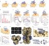
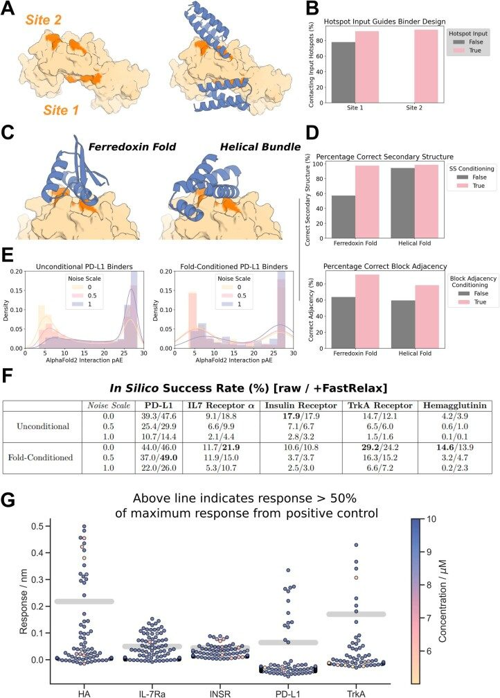
To compare RFdiffusion to previous binder design methods, we performed binder design campaigns against five targets: Influenza A H1 Haemagglutinin (HA)52, Interleukin-7 Receptor-ɑ (IL-7Rɑ)12, Programmed Death-Ligand 1 (PD-L1)12, Insulin Receptor (InsR) and Tropomyosin Receptor Kinase A (TrkA)12. We designed putative binders to each target, both with and without conditioning on compatible fold information, with high in silico success rates (Extended Data Fig. 8e,f). Designs were filtered by AF2 confidence in the interface and monomer structure26, and 95 were selected for each target for experimental characterization.
The designed binders were expressed in E. coli and purified, and binding was assessed through single point biolayer interferometry (BLI) screening at 10 μM binder concentration (Extended Data Fig. 8g). The overall experimental success rate, defined as binding at or above 50% of the maximal response for the positive control, was 19% (this is a conservative estimate as some designs that showed binding had insufficient material to permit screening at 10 μM: Extended Data Fig. 8g); an increase of roughly two orders of magnitude over our previous Rosetta-based method on the same targets (Fig. 6b). Binders were identified for all five targets, with fewer than 100 designs tested per target compared to thousands in previous studies. Full BLI titrations for a subset of the designs showed nanomolar affinities with no further experimental optimization, including HA and IL-7Rɑ binders with affinities of roughly 30 nM (Fig. 6c). Binding interfaces were often highly distinct from interfaces to these targets in the PDB (Supplementary Figs. 11 and 12). To assess binder specificity, six of the highest affinity IL-7Rɑ binders were assessed by means of competition BLI, and all six competed for binding with a structurally validated positive control binding to the same site (Supplementary Fig. 10a; further work is required to fully characterize proteome-wide specificity).
We solved the structure of the highest affinity Influenza binder, HA_20, in complex with Iowa43 HA using cryo-EM (Extended Data Table 1). Raw electron micrographs revealed a well-folded HA glycoprotein with clearly discernible side, top and tilted view orientations suspended in a thin layer of vitreous ice (Extended Data Fig. 9a). The 2D class averages further show clear secondary structure elements corresponding to both Iowa43 HA (Extended Data Fig. 9b), as well as the HA_20 binder bound to the stem (Fig 6e). The 3D heterogenous refinement without symmetry revealed full occupancy of all three HA stem epitopes by the HA_20 binder. A final non-uniform 3D refinement reconstruction with C3 symmetry yielded a 2.9 Å map of the HA/HA_20 protein–protein complex (Fig 6f) and corresponding 3D structure that almost perfectly matches the computational design model (0.63 Å, Fig 6f,g; the sidechain interactions at the interface are very different from the closest structure in the PDB; Extended Data Fig. 9h). Over the binder alone, the experimental structure deviates from the RFdiffusion design by only 0.6 Å (Fig. 6h). These results demonstrate the ability of RFdiffusion to generate new proteins with atomic level accuracy, and to precisely target functionally relevant sites on therapeutically important proteins.
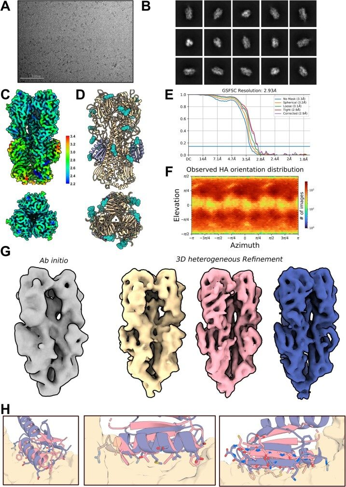
Discussion
RFdiffusion is a comprehensive improvement over current protein design methods. RFdiffusion readily generates diverse unconditional designs up to 600 residues in length that are accurately predicted by AF2, far exceeding the complexity and accuracy achieved by most previous methods (a recent Hallucination-based approach also achieved high unconditional performance53). Half of our tested unconditional designs express in a soluble way, and have circular dichroism spectra consistent with the design models and high thermostability. Despite their substantially increased complexity, the ideality and stability of RFdiffusion designs is akin to that of de novo protein designs generated using previous methods such as Rosetta. RFdiffusion enables generation of higher-order architectures with any desired symmetry, unlike Hallucination methods, which have so far been limited to cyclic symmetries. Electron microscopy confirmed that the structures of these oligomers are very similar to the design models, which in many cases show little global similarity to known protein oligomers.
There has been recent progress in scaffolding protein functional motifs using deep-learning methods (RF Hallucination, RFjoint Inpainting and diffusion), but Hallucination is slow for large systems, Inpainting fails when insufficient starting information is provided and previous diffusion methods had low accuracy. RFdiffusion outperforms these previous methods in the complexity of the motifs that can be scaffolded, the precision with which sidechains are positioned (for catalysis and other functions), and the accuracy of motif recapitulation by AF2. The design of MDM2 binding proteins with three orders of magnitude higher affinities than the scaffolded P53 motif demonstrates the robustness of RFdiffusion motif scaffolding. Combining accurate motif scaffolding with the design of symmetric assemblies enabled consistent and atomically precise positioning of sidechains to coordinate Ni2+ ions across diverse tetrameric assemblies
For binder design from target structural information alone, previous work required testing tens of thousands of sequences12. RFdiffusion, when combined with improved filtering26 raises experimental success rates by two orders of magnitude; high-affinity binders can be identified from dozens of designs, in many cases eliminating the requirement for slow and expensive high-throughput screening (at least for the non-polar sites targeted here; further studies will be required to assess success rates on more polar target sites and sites without native binding partners). A high-resolution cryo-EM structure of one of these designs in complex with influenza HA shows that RFdiffusion can design functional proteins with atomic accuracy. Vázquez Torres et al. demonstrate the ability of RFdiffusion to design picomolar affinity binders to flexible helical peptides54, further highlighting its use for de novo binder design. Vázquez Torres et al. also show how RFdiffusion can be extended for protein model refinement by partial noising and denoising, which enables tuneable sampling around a given input structure. For peptide binder design, this enabled increases in affinity of nearly three orders of magnitude without high-throughput screening.
The breadth and complexity of problems solvable with RFdiffusion and the robustness and accuracy of the solutions far exceeds what has been achieved previously. In a manner reminiscent of the generation of images from text prompts, RFdiffusion makes possible, with minimal specialist knowledge, the generation of functional proteins from minimal molecular specifications (for example, high-affinity binders to a user-specified target protein, and diverse protein assemblies from user-specified symmetries).
The power and scope of RFdiffusion can be extended in several directions. RF has recently been extended to nucleic acids and protein–nucleic acid complexes55, which should enable RFdiffusion to design nucleic acid binding proteins and perhaps folded RNA structures. Extension of RF to incorporate ligands should similarly enable extension of RFdiffusion to explicitly model ligand atoms, and allow the design of protein–ligand interactions. The ability to customize RFdiffusion to specific design challenges by addition of external potentials and by fine-tuning (as illustrated here for catalytic site scaffolding, binder-targeting and fold specification), along with continued improvements to the underlying methodology, should enable de novo protein design to achieve still higher levels of complexity, to approach and, in some cases, surpass what natural evolution has achieved.
Extended data figures and tables
Peer review
Footnotes
References
Associated Data
Supplementary Materials
Data Availability Statement
Design structures, AF2 models and experimental measurements are available at https://figshare.com/s/439fdd59488215753bc3. Cryo-EM maps and corresponding atomic models for the Influenza HA binder in Fig. 6d–h have been deposited in the PDB and the Electron Microscopy Data Bank under accession codes 8SK7 and EMDB-40557, respectively. Electron microscopy data collected for the HE0537 oligomer are available at EMDB-40602.
Code for running RFdiffusion has been released on GitHub, free for academic, personal and commercial use at https://github.com/RosettaCommons/RFdiffusion. It is also available as a Google Colab notebook, accessible through GitHub.